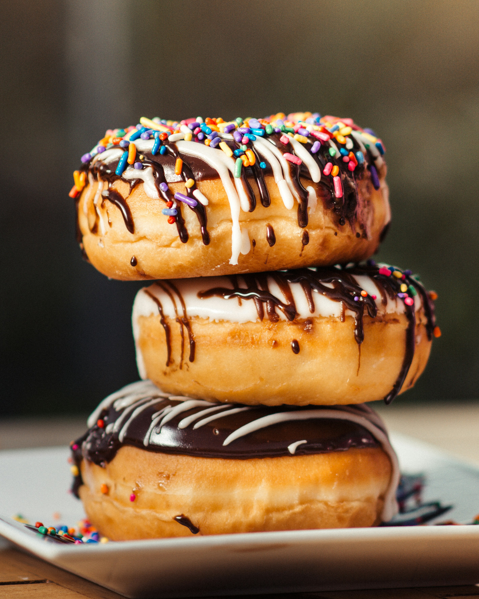

NA OSŁODĘ
PĄCZKARNIA
W Marcelim pączkarnia to miejsce, gdzie domowa tradycja spotyka się z nowoczesnymi nadzieniami. Puszyste ciasto, złocista skórka i obfite wnętrze sprawiają, że każdy pączek smakuje wyjątkowo.
Od klasycznej róży i aksamitnego budyniu po krem pistacjowy, słony karmel i sezonowe kompozycje - idealne do porannej kawy lub w większym zestawie na spotkanie.
ZAMÓW ZESTAW PĄCZKÓW ›